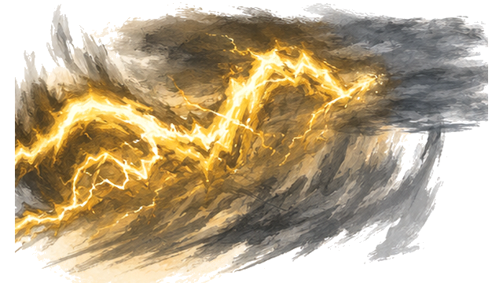
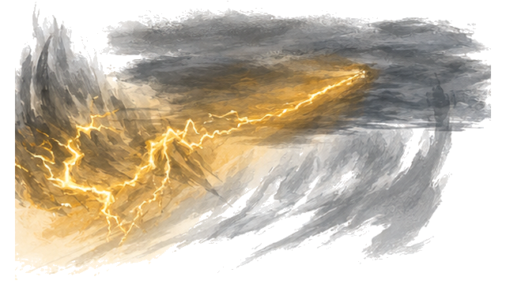
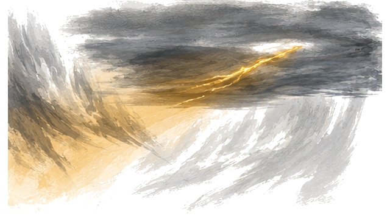
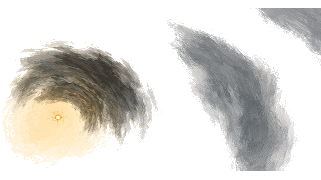
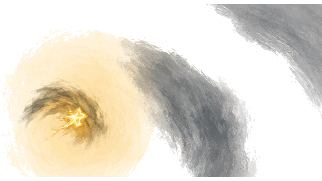
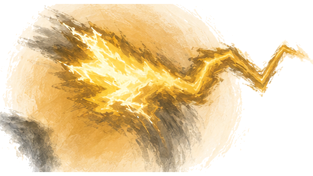

K17 · 原85 · Alpha层级 224

K17 · 原85 · Alpha层级 224

K18 · 原89 · Alpha层级 218

K19 · 原93 · Alpha层级 214

K20 · 原96 · Alpha层级 203

K21 · 原97 · Alpha层级 212

K22 · 原103 · Alpha层级 199

K23 · 原108 · Alpha层级 206

K24 · 原115 · Alpha层级 200